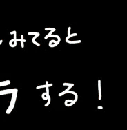
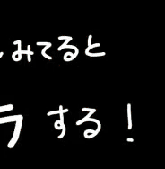

Classmates wiki
"Not bad for a dead guy, huh?"
- Neon white
"Not bad for a dead guy, huh?"
- Neon white


ERROR: File Not Found File Path: C:\Users\Documents\titas.txt If the problem persists, I think you have skill issues ;-; bozo + L + ratio
But for real I have no idea who he is but all I know he's someone who rarely shows up to school (me too buddy, me too) but besides that I think he's normal I HOPE. He reminds me of Keisuke because I feel like he would have name Titas and lowkey looks like him I guess? So I assigned him this nice guy. I don't recommend doing line nor touching screwdrivers though!
 
